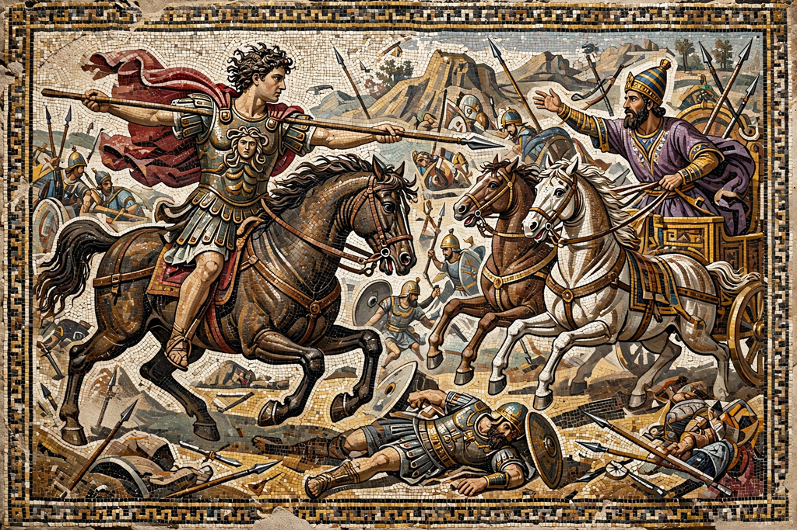

From Wikipedia, the free encyclopedia
| Alexander the Great | |
|---|---|
 | |
| King of Macedon | Reign 336 – 323 BC |
| Pharaoh of Egypt | Reign 332 – 323 BC |
| King of Persia | Reign 330 – 323 BC |
| Born | 20 or 21 July 356 BC, Pella, Macedon |
| Died | 10 or 11 June 323 BC (aged 32), Babylon |
| Father | Philip II of Macedon |
| Mother | Olympias of Epirus |
Alexander III of Macedon (20/21 July 356 BC – 10/11 June 323 BC), commonly known as Alexander the Great, was a king of the ancient Greek kingdom of Macedon. He succeeded his father Philip II to the throne in 336 BC at the age of 20, and spent most of his ruling years conducting a lengthy military campaign throughout Western Asia, Central Asia, parts of South Asia, and Egypt. By the age of 30, he had created one of the largest empires in history, stretching from Greece to northwestern India. He was undefeated in battle and is widely considered to be one of history's greatest and most successful military commanders.
Alexander was tutored by Aristotle until the age of 16. Following Philip's assassination in 336 BC, Alexander inherited a strong kingdom and an experienced army. He was awarded the generalship of Greece and used this authority to launch his father's pan-Hellenic project to lead the Greeks in the conquest of Persia.
In 334 BC, Alexander invaded the Achaemenid Empire and began a series of campaigns that lasted for 10 years. Having broken the Persian power in a series of decisive battles, including those at Issus and Gaugamela, he subsequently overthrew King Darius III and conquered the Persian Empire in its entirety. He founded more than twenty cities that bore his name, most notably Alexandria in Egypt.
Alexander's desire to reach the "ends of the world" led him to invade India in 326 BC, where he defeated King Porus at the Battle of the Hydaspes. His weary troops mutinied at the Hyphasis River and refused to march further east, forcing him to turn back. Alexander died in Babylon in 323 BC, at the age of 32; the cause remains disputed among ancient and modern historians, with theories including malaria, typhoid fever, poisoning, and assassination.
Alexander's death left his vast empire without an agreed successor, and it was divided among his generals (the Diadochi) after a series of wars. His campaigns spread Greek culture across the Near East, ushering in the Hellenistic period. He became the measure against which later military leaders compared themselves, and military academies throughout the world still teach his tactics.
Categories: 356 BC births | 323 BC deaths | Kings of Macedonia | Ancient Greek generals